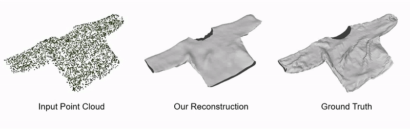
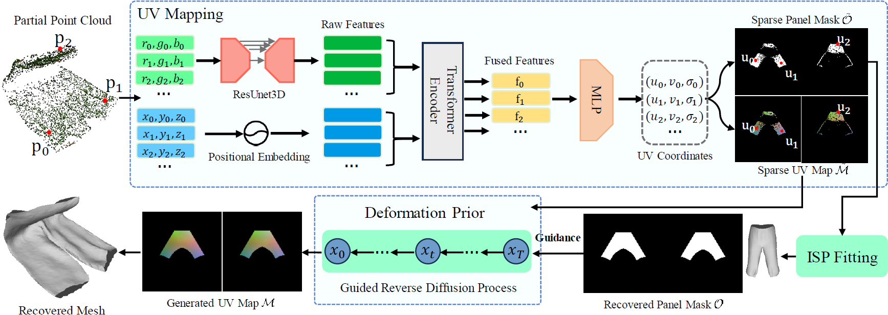
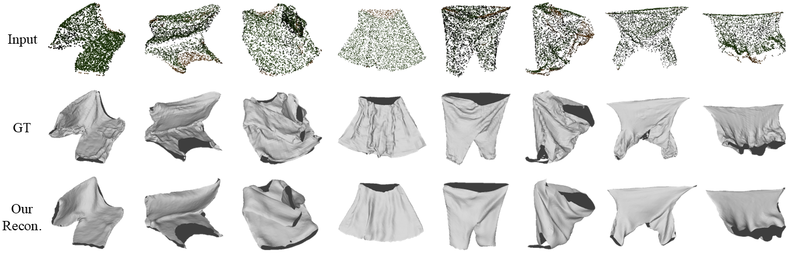

Reconstruction of Manipulated Garment with Guided Deformation Prior
Ren Li, Corentin Dumery, Zhantao Deng, Pascal Fua
Abstract
Modeling the shape of garments has received much attention, but most existing approaches assume the garments to be worn by someone, which constrains the range of shapes they can assume. In this work, we address shape recovery when garments are being manipulated instead of worn, which gives rise to an even larger range of possible shapes. To this end, we leverage the implicit sewing patterns (ISP) model for garment modeling and extend it by adding a diffusion-based deformation prior to represent these shapes. To recover 3D garment shapes from incomplete 3D point clouds acquired when the garment is folded, we map the points to UV space, in which our priors are learned, to produce partial UV maps, and then fit the priors to recover complete UV maps and 2D to 3D mappings. Experimental results demonstrate the superior reconstruction accuracy of our method compared to previous ones, especially when dealing with large non-rigid deformations arising from the manipulations.
Approach

Given a point cloud, we first map it to UV space in which the deformation prior is learned, using the trained UV mapper. This mapping yields a UV map $\tilde{\mathcal{M}}$ and a panel mask $\tilde{\mathcal{O}}$ that are typically sparse due to the occlusions. We then fit ISP using the sparse mask to recover the 2D shape of the 2D panels. Subsequently, we take the sparse UV map $\tilde{\mathcal{M}}$ and the ISP-recovered mask $\mathcal{O}$ as manifold guidance to direct the generation process of the diffusion prior. Leveraging the mapping function of ISP, this process finally produces a garment mesh that aligns with the point cloud observation.
Results

Our method can recover garment meshes from input point clouds faithfully with correct shape and deformations.
Our recovered meshes can be used for animation and simulation directly.
BibTeX
If you find our work useful, please cite it as:@inproceedings{li2024folding,
author = {Li, Ren and Dumery, Corentin and Deng, Zhantao and Fua, Pascal},
title = {{Reconstruction of Manipulated Garment with Guided Deformation Prior}},
booktitle = {Advances in Neural Information Processing Systems},
year = {2024}
}
References
[ISP]
R. Li, B. Guillard, P. Fua. ISP: Multi-Layered Garment Draping with Implicit Sewing Patterns. In NeurIPS, 2023.